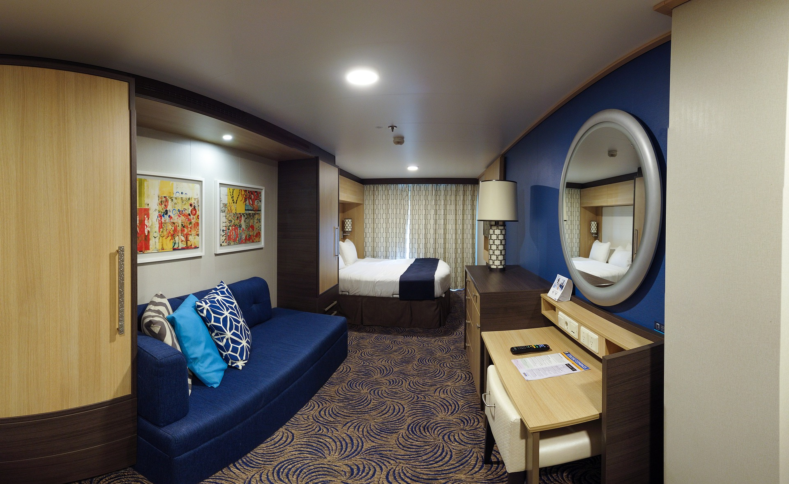

Dining Options
 On Disney cruises you will experience unforgittable and unique cusine. You will have the option to dine with either your individual family or sit with another family that has similar aged childen as your family. Either option you are guranteed a wonderful dining experiance. Each table will have a server that will travel with them to each resturantand stay with you for the duration of your trip. Your servers will get to know you very well, interact with your children, and provide suggestions based on what they note you enjoy!
On Disney cruises you will experience unforgittable and unique cusine. You will have the option to dine with either your individual family or sit with another family that has similar aged childen as your family. Either option you are guranteed a wonderful dining experiance. Each table will have a server that will travel with them to each resturantand stay with you for the duration of your trip. Your servers will get to know you very well, interact with your children, and provide suggestions based on what they note you enjoy!
Entertainment
 On While on your dismey crusie you will have the opportunity to witness a wide range of entertainment options. This includes 3 diffrent brodway shows that vary based on the ship you will be on. On the dream you ill have the opportunity to see Beauty and the beast, golden mickeys, and Believe! I have seen all three and they are all amazing, high quality broadway shows. They do one show per night and they have 2 showings a night. If you have early dining you will go to the show after dinner, and if you have late dining you will go to the show and then dinner.
On While on your dismey crusie you will have the opportunity to witness a wide range of entertainment options. This includes 3 diffrent brodway shows that vary based on the ship you will be on. On the dream you ill have the opportunity to see Beauty and the beast, golden mickeys, and Believe! I have seen all three and they are all amazing, high quality broadway shows. They do one show per night and they have 2 showings a night. If you have early dining you will go to the show after dinner, and if you have late dining you will go to the show and then dinner.
Accommodations
On There is a vast amount of room types on board all four disney crusie ships so there is something available for every faimily! The first choice you need to make when deciding that you are going to go on a disney cruise is if you are going to have an ocean view or not. Next depending on your family size you will need to pick what room will fit your family. A family of four can fit comfortablly in a standard size room and a family of five will fit in a deluxe. Both of these room types are availbale in Veranda (ocean view) and inner cabin (no ocean view).